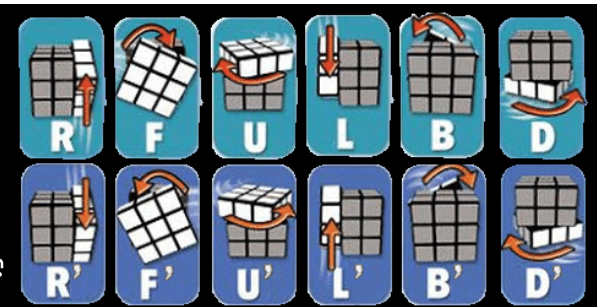
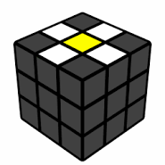
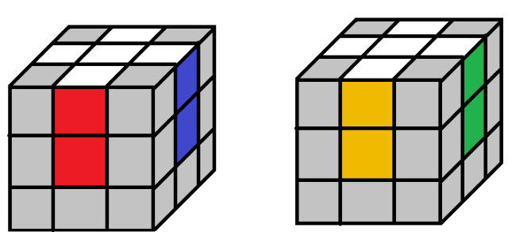
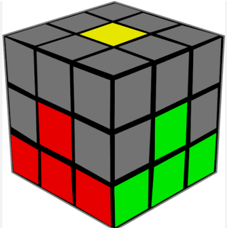
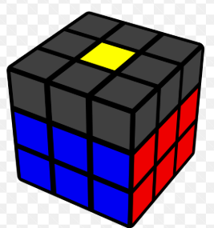
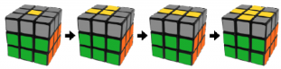

The Rubik's Cube was made in 1972 by Erno Rubik and it took him one month to solve it for the first time. Now, the average competitive speed solver completes it in under 15 seconds.
However, everyone has to start somewhere and now you can learn how to solve it!
First, let's understand the structure of the 3x3 cube. Instead of seeing the cube as a collection of individual colors, see it as a collection of pieces that can be moved around.
Pieces can be corners, edges, or centers. The centers are the pieces in the middle of each face and they cannot be moved around and will always stay the same relative to each other. For example, the white center will always be opposite the yellow center and the red center will always be opposite the orange center.
Next are the corners these pieces have three colors on them. and these colors will never seperate. If you choose a corner piece and move it around, you will see that the colors on the that piece never seperate.
Finally, the edges are the pieces that have two colors on them and these colors will also never seperate.
Now this tutorial will use cube notation to describe the moves required. Below is an image showing the notation:

You don't need to memorize all of the notation, as you can always check back but if you plan to take cubing to the next level you will need to eventually memorize it.
For this tutorial you shouldn't memorize the notation of the algorithm but instead recognize a pattern in the algorithm and memorize that.
The notation in this tutorial is mostly so that you aren't confused with statements like "turn the right face clockwise" and "turn the left face counterclockwise".
Now we can begin to solve the 3x3 cube.
First thing you need to do is create a cross on the first layer. For this tutorial, we will use the white face as the starting point.
However, also take note that you can use any face as the starting point.
First you will want to find the white edges and position them around the yellow center to create the daisy.

Once you have the daisy, align the colors on the sides of the white edges with the corresponding center colors, and the face twice to move it next to the white center.
in the end you will end up with something like this:

Finally move the white face to the bottom with the yellow center facing up, and now we can move on to the next step. The first layer.
First, you will want to find the white corners, then you will want to make they are all in the top layer before you can insert them into the first layer.
However, this is difficult without breaking the cross.
as such, I will now introduce the first algorithm of 4 algorithms:
This algorithm is used to move corner pieces to and from the first layer. It will also be used in the next step with it's left handed version: L' U' L U
If you want to remove a corner piece from the first layer, you must first make sure that the piece is on a face facing you then use the algorithm to move it.
if it's in the bottom left on your side then use the left handed version, and the right handed version if it's on the bottom right.
Make sure that the colors on the corner pieces align with the colors on the adjacent centers and that white is facing down to match with the edges from before. You may need to repeat the algorithm multiple times for it to be oriented properly.
Congratulations! You have successfully completed the first layer, and the cube should now look like this:

Now that you have finally completed the first layer it is time to move on the the second layer.
For the second layer, you will need to both of the algorithms that have already been introduced. First, you will find any edge that does not have any yellow stickers that is in the top layer.
Then align the the color on the side to match a center color before looking at the top sticker then move the top layer in the opposite direction to that center piece color. Then, use the algorithm with the hand opposite of the direction you moved in, and then rotate the cube so that the top color of the edge is facing you and use the opposite algorithm to the one that was just used.
For example, if you have a green-red edge with green on the side and red on top, then you would align the green with the green center and move the cube so that the green center is facing you. Then, move the edge opposite of the top color, which would be the red center since red is the top color, so that it is now aligned with the orange (since orange is opposite of red on the cube), but keep the green center facing you. Since the edge was moved to the right to align it with the orange center use the Left-handed variation of the algortithm (if this were a green-orange edge you would need to move it to the left to align it with the opposite color and hence you would use the right-handed version). Then finally move the cube so that the red center is facing you and use the opposite algorithm which would be the right-handed version in thios case.To remove an edge from the second layer you need to use the right-handed algorithm when the edge is on your right then turn the cube so that the center that was facing right is now facing you before using the left-handed variation. Repeat until and the edges in the second layer are finished.
Congratualtions! You have finished the second layer. That one is quite difficult compared to the last two step and but now it is done and the cube should look like this.

The cross is far easier than this last step all it needs is a modified version of the algorithm we've been using the whole time which is: F R U R' U' F'

This image shows the cases you can get once you get to this stage. As long as you orient the piece as shown and do the new algorithm you will be aable to solve the yellow cross.
each of these cases go into eachother so that after you do the algorith on the first case shown in the image you will get the second case and you will need to continue until getting the cross.
Now that you have the yellow cross done it's time for the yellow edges.
To solve the yellow edges we need the third algorithm which is:
The 2 in the algorithm simply means to turn the face twice.
Look at the yellow edges and the side colors. try to match up as many with their respective centers. If they all match up the congrats you are able to skip to stage.
Otherwise you have to use the new algorithm. If you are able to match up two edges with their centers, and they are adjacent, move the cube so that the edges matching their centers is in the back and the other on the right. Then, use the algorithm. you may need to turn the top layer to make sure that the edges are aligned.
Otherwise, in any other case (edges that match up are opposite eachother or you can only match up one edge) use the algorithm and check if you can find the edges that match are adjacent and if you cant keep repeating the algorithm until you do. Once you find the edges adjacent case follow the prior instructions.
Congratualtions! You are now in the final two steps to to solve the cube!
Now that you have the yellow edges done you know have to do the yellow corners. Look at the yellow corners and try to see if they are in the right spot make sure to check this while the edges are aligned with their centers.
Which means to see if the colors on the corner is the same as the colors of the centers around. The corner will often not be correctly oriented and will look out of place; however, if the centers around it match the colors on the cube.
There are three cases that arise from this:
Now to introduce the final algorithm: R U R' U' L' U R U' R' L
In the first case use this algorithm anywhere as long as the yellow center is facing up to get the second case.
In the second case make the corner that is in the correct position in the top right facing you and use the algorithm.
Congratualtions! You are now at the final step to solve the cube (or it might have been finished in this step)!
This is the final step in solving the cube. First flip the cube over so that white is facing up. Then find a corner that is oriented incorrectly and keep in the bottom right corner facing you.
From here on if you want to move a piece to the bottom right corner you turn the bottom layer (the D layer in the notation sheet)
Once you have a piece in the bottom right corner simply do the first algorithm (R U R' U') until the yellow is facing down. Do not worry about it ruing the cube as long as you follow the warning once you finish orienting the corners it will be fixed.
If everything is done correctly you will have solved the cube!